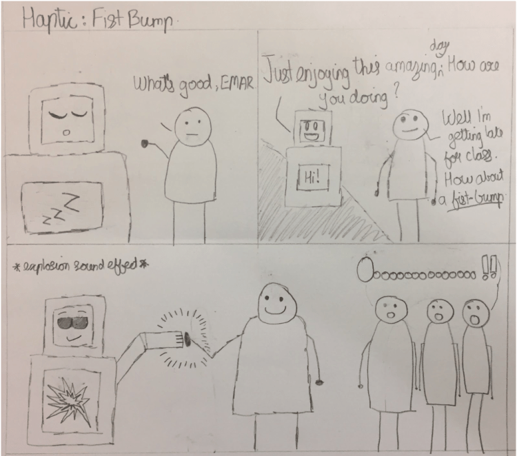

Prototyping the Greeting and Navigation System
/
Creating a Meaningful First Interaction with Teens
Overview
Creating a meaningful first interaction with EMAR by testing product designs with students in Seattle Public Schools.
Design Question
How can we create a meaningful first interaction for students with EMAR?
Methods
Our team used participatory design strategies to understand how teens envisioned themselves forming an initial first interaction with EMAR. We first presented teens with a series of sketches on how we envisioned teens interacting with EMAR through haptic touch, touch screen, and voice activation. We then had students create their own storyboard sketches of how they would imagine themselves interacting with EMAR in their own schools. We used the teens' sketches to create a low-fidelity prototype of the greeting and navigation system to usability test with teens at Garfield High School and Ekstein Middle School.
My Roles
- Ideation and sketching
- Developing user flows
- Creating a low-fidelity prototype
Ideation
Sketching initial interactions
Our team created a series of sketches to present to students in the field at Chief Sealth High School. We came up with three potential ways students could form an initial, meaningful interaction with EMAR. These sketches included:
- Using a touch screen: teens would form an initial interaction with EMAR by touching a screen located on EMAR’s stomach
- Using haptic touch: teens would begin interacting with EMAR by sharing a fist bump with EMAR
- Using voice activation: teens would begin interacting with EMAR by greeting EMAR with a “Hello” or asking EMAR to “Wake up!”
In envisioning these initial interactions using storyboard sketches, our team was then able to take these sketches to teens into Seattle Public Schools to get feedback from teens.

Design Sessions
Presenting sketches to teens
After our team brainstormed how teens might begin forming an initial interaction with EMAR, we wanted to share our ideas with teens at Chief Sealth High School. We took the three storyboards we created depicting interaction through haptic touch, touch screen, and voice activation so that we could better understand how teens envisioned themselves interacting with EMAR.
Once we were in the field, we began by showing teens the sketches we had drawn to get them started on thinking about how they would approach EMAR and begin interacting with it. Once the teens had seen our sketches, we asked them to storyboard their own ideas on how they would form an initial interaction with EMAR.
Student responses to sketches
In response to our initial sketches, teens shared they would prefer turning EMAR on by touching a tablet screen that would be placed on EMAR’s belly. Students also shared that using voice or haptic touch to form an initial interaction with EMAR did not interest them.
When we asked the teens to create sketches of a teen in their school interacting with EMAR, students at Chief Sealth brought up the idea of using a button to turn EMAR on. This button might be placed on EMAR’s body and would allow teens to turn EMAR on and off when they were done interacting.
Iteration
After working with teens at Chief Sealth High School, our team began exploring the idea of using a button to turn EMAR on. To test this interaction, our team created a cardboard prototype of EMAR with a pressable button on its belly area.
Once we decided on the button placement, we then used Google Slides to develop the navigation interface that would be featured on the screen located on EMAR’s belly. We first developed a user flow to understand how these screens might fit together. We then created a series of representative screens that teens could use to interact with EMAR using touch, inputting their stress data and watching a video clip of their choice.
Usability Testing with Teens
We then took our cardboard prototype and new tablet screens to test with students at Ekstein Middle School and Garfield High School. We presented students with seven scenarios that asked them to complete a range of tasks including:
- You woke up late for school, then you missed your bus, and forgot your homework at home because you were rushing out the door. Later that day you have a few minutes to take a breather before the bell rings and you noticed a gadget in the hall. How do you begin your interaction?
- You’re feeling stressed about an upcoming test. How could you share how you’re feeling with EMAR?
- You’re done with EMAR, what would you do next?
Key Findings
After usability testing with teens at Ekstein Middle School, we found that teens generally liked the idea of using touch to navigate through the screens on EMAR. We also found that:
- Teens liked the button swivel design and were interested in it being placed on the right side of EMAR’s belly
- Teens were interested in EMAR having eyes that would change colors based on their emotions
- Teens would like to see EMAR blink
At Garfield High School, teens also responded positively to the idea of using touch. We also noticed that:
- Teens wanted to first approach EMAR to say hi before forming an initial interaction
- Teens were interested in approaching EMAR with a friend because it’s less intimidating
- Teens struggled to envision where EMAR might be placed in their own school
Next Steps
More testing is needed to better understand what a navigation system should look like for EMAR. In the future, our team would like to build a higher fidelity prototype to further test how students would form an initial interaction with EMAR using a button to turn EMAR on.
Because teens often struggled to understand how these functions might work, creating and testing higher fidelity prototypes of the greeting and navigation system would give teens a better understanding of these functions.
Our team would like to investigate the following questions in the future:
- Can teens navigate through EMAR’s screens to accomplish tasks? Where do they struggle?
- Do teens prefer voice to form an initial interaction with EMAR compared to the physical button and haptic? Why or why not?
- What are teens' impressions and thoughts about EMAR’s functions and apps?
- Do teens think they would interact with EMAR again in the future? Why or why not?
- Does EMAR provide a seamless experience for teens? Where can the navigation and flow be improved?
- Is haptic (fist bump) integration effective for forming an initial interaction with EMAR? Why or why not? What other ways could it be used?